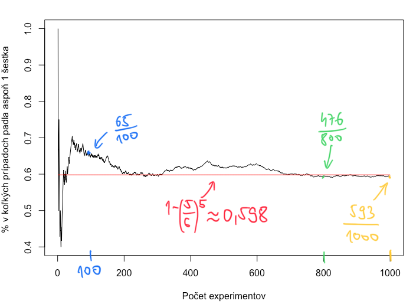
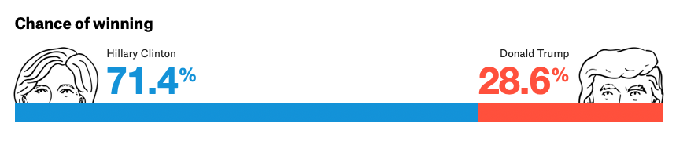
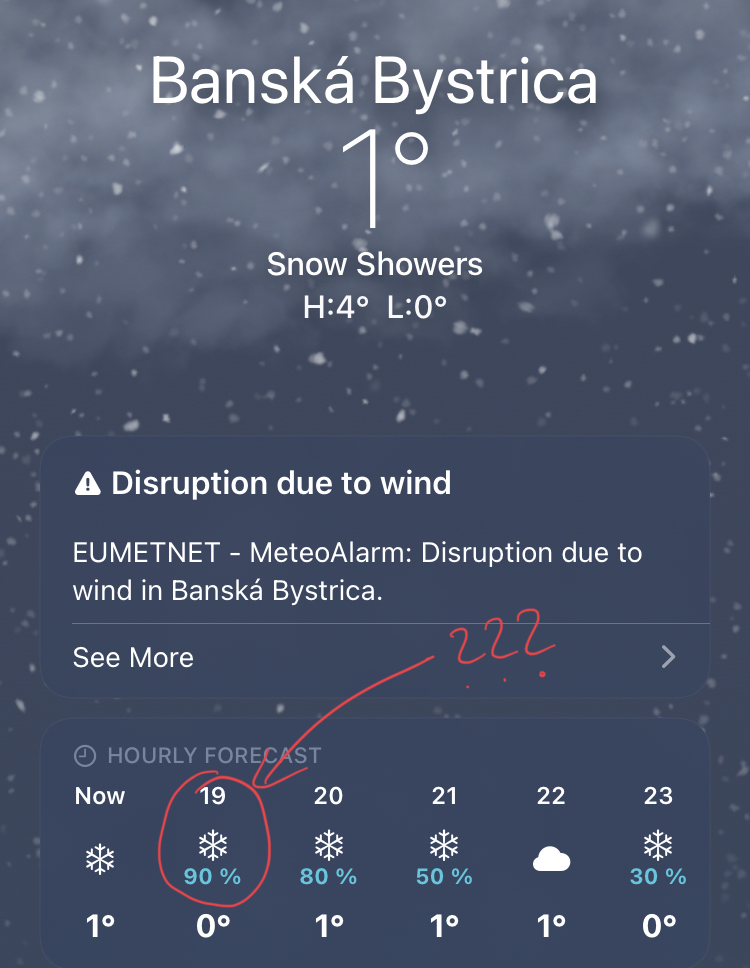

1 Interpretácia pravdepodobnosti
Teória pravdepodobnosti je jazykom neistoty.
V živote často čelíme neistote, rôznym typom neistoty. Pýtame sa nasledujúce otázky:
- Bude zajtra pršať?
- Bude prebiehať výučba tento semester konečne prezenčne?
- Prekoná cena ropy hranicu 100$ za barel do konca roka?
- Vyhrá politická strana XY voľby?
- Vybuchne tento rok elektráreň v Mochovciach?
- Vezmeš si ma?
Férová a úprimná odpoveď na všetky tieto otázky je: “Neviem.” (No dobre, okrem tej poslednej.)
Prečo? Nuž, lebo naozaj nevieme. V skutočnosti je však obrovský rozdiel v týchto otázkach: to “Nevieme.” zďaleka nie je rovnaké v týchto situáciách. Teda táto odpoveď vôbec nie je uspokojivá a užitočná tiež nie je. Chceli by sme čosi viacej. Chceli by sme nejakým spôsobom kvantifikovať neistotu spojenú s týmito otázkami a tam aj teraz smerujeme. Práve za týmto účelom používame slovo pravdepodobnosť a teraz ideme budovať matematickú teóriu, aby sme neistote lepšie porozumeli a vedeli s ňou pracovať, spoznali jej štruktúru.
Chceme vedieť: Koľko neistoty je spojenej s týmito otázkami? Chceme to nejak odmerať.
Iná, tiež férová a tiež úprimná odpoveď na všetky tieto otázky by bola: “Nevieme. Lebo je to náhodné.”
No dobre, ale rôzne udalosti sú rôzne náhodné. Niektoré nastávajú často, iné menej často. U iných zasa nedáva moc zmysel pýtať sa, ako často nastávajú, nakoľko ide len o jednorázovú udalosť. U iných si veľmi ľahko vieme predstaviť opakovanie a tam sa môžeme pýtať ako často udalosť nastáva.
1.1 Frekventisitická interpretácia
Môžeme sa pýtať aj iné otázky:
- Padne pri 5 nezávislých hodoch férovou kockou aspoň jedenkrát číslo 6?
- Padne pri 10 nezávislých hodoch férovou mincou najviac trikrát znak?
- Vyberiem z kartového balíčka srdcovú postupku?
Asi uznáte, že tieto otázky sú umelohmotné. Vyskytujú sa najmä v učebniciach pravdepodobnosti a v reálnom živote už pomenej, ba až vôbec. To ale neznamená, že nie sú užitočné. Sú totiž užitočné na to, aby sme abstrahovali od zložitostí reálneho sveta, ktoré zneprehľadňujú naše rozmýšlanie o pravdepodobnosti a o neistote a sústredili sa len na podstatu. Pochopili koncept pravdepodobnosti. My sa na takýchto umelohmotných prípadoch musíme naučiť rozmýšľať a potom bude oveľa ľahšie vedieť správne priradiť tieto koncepty k reálnym aplikáciám.
Vráťme sa naspäť k tým otázkach. Chceli by sme náhodu kvantifikovať.
- Aká je šanca, že pri 5 nezávislých hodoch férovou kockou padne aspoň jedenkrát číslo 6?
- Aká je šanca, že pri 10 nezávislých hodoch férovou mincou padne najviac trikrát znak?
- Aká je šanca, že vyberiem z kartového balíčka srdcovú postupku?
Tu tak potichu predpokladáme, že máme akési opakovateľné experimenty v kontrolovanom prostredí. A že pri dostatočne veľkom počte opakovaní sa frekvencia nastatia danej udalosti (napr. pád aspoň 1 šestky z 5 hodov) bude blížiť k nejakému čislu. Toto číslo myslíme pod tým pojmom “šanca”. Áno, vidíte kam smerujem; tomuto číslu zvykneme hovoriť aj pravdepodobnosť.

Obrázok 1.1: Počet “úspešných” experimentov sa blíži k akejsi hodnote. Z prvých 800 experimentov padla šesťka aspon v jednom prípade z piatich 476 krát. Červenou je skutočná pravdepodobnosť. (Zdroj: vlastná simulácia v R.)
Tento obrázok vyjadruje, ako sa postupne vyvíja frekvencia nastatia udalosti “pri 5 nezávislých hodoch férovou kockou padne aspoň jedenkrát číslo 6”. Blíži sa k akémusi číslu a toto nie je zhoda náhod. Súvisí to s jedným hlbokým výsledkom (nazýva sa Zákon o Veľkých Číslach), ktorému sa budeme venovať neskôr. Takejto interpretácii pravdepodobnosti, keď si vieme predstaviť opakujúci sa experiment hovoríme aj frekventistická. Táto interpretácia pravdepodobnosti je založená na tom, že jednotlivé experimenty sú rovnocenné.
1.2 Subjektivistická interpretácia
Ale svet nie sú kocky, mince a karty. Niektoré udalosti nástavajú len a nie je zmysluplné uvažovať o ich opakovaní. Skrátka a dobre, frekventistická interpretácia pravdepodobnosti v tomto prípade nesedí.
- Aká je pravdepodobnosť, že cena ropy prekoná hranicu 100$ za barel do konca roka?
- Aká je šanca, že strana XY zvládne zostaviť koalíciu v najbližších parlamentných voľbách?
- Aká je pravdepodobnosť zemetrasenia v Banskej Bystrici počas najbližších 5 rokov?
Asi sa zhodneme na tom, že toto sú zaujímavé otázky, takže by sme konieckoncov chceli vedieť na ne nejakú odpoveď. Každopádne nám tu chýba niečo, čo pri kockách, minciach a kartách máme. Chýba nám objektívny rámec, ktorým by sme vedeli vyhodnotiť úspešnosť danej odpovede. Predtým sme vedeli experimenty opakovať, teraz to však robiť nevieme. Môžeme vytvoriť nejaký matematický model, ktorý bude modelovať dynamiku ceny ropy. Toto je samozrejme ohromne náročné. Takýto model je akási zjednodušenina sveta. Robí mnoho zjenodušujúcich predpokladov ale na niektoré otázky môže dávať čiastočne uspokojivé predpovede. Každopádne, či chceme, či nie, takéto vyhodnotenie pravdepodobnosti bude vždy subjektívne. Matematický model môže byť validovaný na predošlých dátach a vykazovať úspešné pravdepodobnostné predpovede ale nikdy nebudeme mať garanciu toho, že bude fungovať aj v budúcnosti. Čaro modelovania tkvie v tom urobiť jednoduchý model, ale nie príliš.
Pred prezidentskými voľbami v USA v roku 2016 bola značnou favoritkou Hillary Clinton pred Donaldom Trumpom. Väčšina think-tankov prisudzovala víťazstvu Clinton vyše 80%, tá však voľby nevyhrala.

Obrázok 1.2: Toto je vrchná časť grafiky webu fivethirtyeight.com, ktorý odhadoval pravdepodobnosť víťazstva demokratickej kandidátky v prezidentských voľbách USA v roku 2016. (Zdroj: https://projects.fivethirtyeight.com/2016-election-forecast/, prístup 7.2.2022)
Čo presne znamená toto číslo 71.4%?1 V tomto prípade šlo o to, že v 14180 prípadoch z 20000 model fivethirtyeight.com nasimuloval víťazstvo Clinton. Takže aj keď nemáme objektívny rámec, môžeme si pomôcť tým, že si simulačný rámec vytvoríme pomocou matematického modelu. Ich model zahŕňal mnoho expertnej skúsenosti sociológov, volebných expertov, ekonómov, demografov a podobne. Kontinuálne upravovali odhady podľa najčerstvejších prieskumov v jednotlivých štátov, do úvahy tiež brali vierohodnosť jednotlivých prieskumných agentúr (tie ktorých prieskumy boli v minulosti bližšie realite dostali väčšiu váhy). Ale tiež šlo len o subjektívne vyhodnotenie pravdepodobnosti. Subjektívnosť tkvie v tom, ako tento volebný model skonštruovali.2
Predikovali 71.4%, a to je viacej ako 50%. Znamená to, že sa mýlili?
Nie je to také jednoduché. Ak by sa takéto voľby konali 1000 krát, tak by sme vedeli vyhodnotiť ako úspešné toto číslo bolo. Nuž ale toto sa nestalo. Voľby boli unikátna udalosť, ktorá nastala presne jeden raz. No a teraz to nevyšlo.3
“V najbližsiu hodinu bude na 90% snežiť.” Čo presne znamená tých 90%?
Nuž, podobne ako pri voľbách, aj tu je to pravdepodobnostný odhad založený na základe modelu, konkrétne meterologického. Alebo priemeru mnohých meteorologických modelov.

Obrázok 1.3: Čo znamená (Zdroj: Weather aplikácia, prístup 7.2.2022)
Intuitívne to vnímame, že ako veľmi môžeme veriť tomu, že bude snežiť. Pri 10% veríme málo, pri 90% je zasa veľa. Kedy by sme chápali, že tých 90% je dobrý odhad? Ak by sme mali takú skúsenosť, že mnohokrát ako sme túto aplikáciu kontrolovali, tak keď nám telefón ukazoval 90%, tak snežilo v 9 prípadoch z 10. Takže, ak práve teraz nebude snežiť, tak to nutne neznamená, že táto predpoveď je zlá.
Dva základné referenčné rámce pre pravdepodobnosť, ktorým veľmi dobre rozumieme sú
- nikdy (0%),
- určite (100%).
Ďalej vieme, že väčšia pravdepodobnosť znamená, že niečo nastáva častejšie (pri opakovaných pokusoch - frekventistická interpretácia) alebo si myslíme viacej, že nastane (subjektivistická interpretácia).
Nielen to. Má zmysel uvažovať aj o tom, že niektorá udalosť môže byť nastávať dvakrát tak často. Ale teraz už predbiehame, o tomto čoskoro.
1.3 Zhrnutie
Pravdepodobnosť sa dá interpretovať rôzne. Napríklad frekventisticky alebo subjektivisticky. Povzbudením nám môže byť to, že nezávisle od typu interprácie je jazykom neistoty stále matematická teória pravdepodobnosti. Teórii pravdepodnosti je totiž tak trochu jedno, ako si vy čo interpretujete.4
Pozor predpoveď 71.4% neznamená, že Clinton mala získať v priemere 71.4% hlasov. Ide o úplne iné čísla.↩︎
New York Times oslovil prominentných odhadovačov, dal im tie isté surové dáta z prieskumu v štáte Florida a požiadal ich o predikciu. Tieto predikcie boli výrazné iné. https://www.nytimes.com/interactive/2016/09/20/upshot/the-error-the-polling-world-rarely-talks-about.html↩︎
Toto je samozrejme prudké zjednodušenie. Každá volebná predikcia zahŕňala nielen celkový výsledok ale aj výsledky v jednotlivých štátoch. Takže vyhodnotiť úspešnosť predikcie nie je úplne nemožné. Ale nedá sa to urobiť len pomocou jednej vyšlo/nevyšlo otázky.↩︎
Viacej si prečítajte tu: Stark, P. B., et al. “What is the chance of an earthquake.” NATO Science Series IV: Earth and Environmental Sciences 32 (2003): 201-213.↩︎